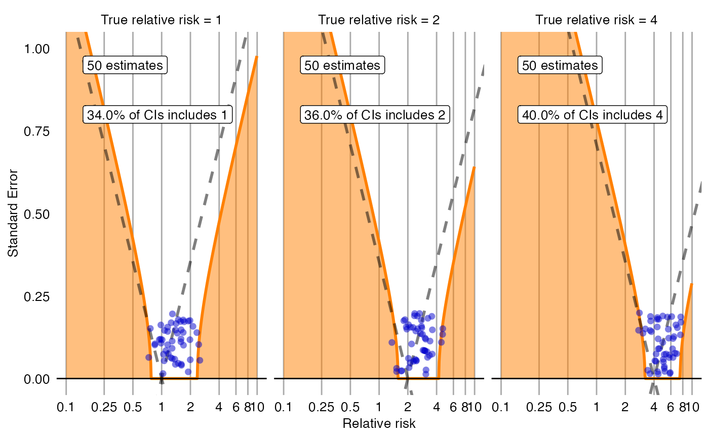

Creates a plot with the effect estimate on the x-axis and the standard error on the y-axis. The plot is trellised by true effect size. Negative and positive controls are shown as blue dots. The area below the dashed line indicated estimates that are statistically significant different from the true effect size (p < 0.05). The orange area indicates estimates with calibrated p < 0.05.
plotCiCalibrationEffect(logRr, seLogRr, trueLogRr, model = NULL, xLabel = "Relative risk", title, fileName = NULL)
| logRr | A numeric vector of effect estimates on the log scale. |
|---|---|
| seLogRr | The standard error of the log of the effect estimates. Hint: often the standard error = (log(<lower bound 95 percent confidence interval>) - log(<effect estimate>))/qnorm(0.025). |
| trueLogRr | A vector of the true effect sizes. |
| model | The fitted systematic error model. If not provided, it will be fitted on the provided data. |
| xLabel | The label on the x-axis: the name of the effect estimate. |
| title | Optional: the main title for the plot |
| fileName | Name of the file where the plot should be saved, for example 'plot.png'. See the
function |
A Ggplot object. Use the ggsave function to save to file.
data <- simulateControls(n = 50 * 3, mean = 0.25, sd = 0.25, trueLogRr = log(c(1, 2, 4))) plotCiCalibrationEffect(data$logRr, data$seLogRr, data$trueLogRr)#> Warning: Removed 1 rows containing missing values (geom_point).